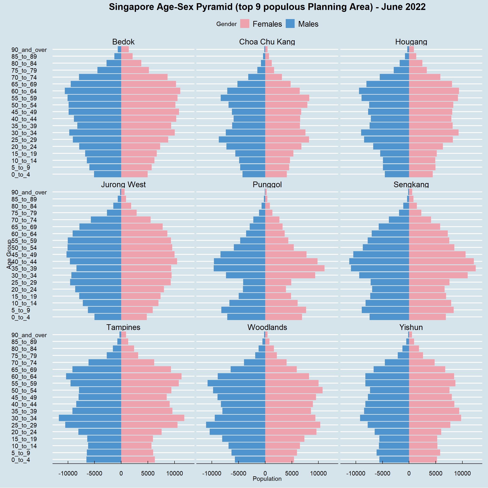

Show the code
pacman::p_load(tidyverse, ggthemes, ggiraph, plotly)Shi Chee Liang
January 28, 2023
February 1, 2023
The Take Home Exercise consists of 2 main tasks:
Select and critique the Tableau Visualisation from one classmate based on the concepts of clarity and aesthetics covered in class.
Remake the original design by using ggplot2, ggplot2 extensions and tidyverse packages (Includes preparing a sketch for the remake)
The following Tableau Visualisation was selected. Observations are highlighted with a box and corresponding serial indicators for reference to the detailed comments below
(a) Lack of details in title. The title does not tell me what the graph is trying to show, which country or area it is for and is also naming the graph type wrongly. A possible title could have been:
Age-Sex Pyramid for Singapore
Top 9 most populated planning area - June 2022
(b) Bins are too large. To be fair, it’s not totally wrong to use a bin of 10 years, however this choice coupled with the choice of layout (elaborated below under Aesthetic) makes the Age-Sex Pyramid too “flat” and difficult to visually interpret the age-sex patterns.
(c) Irrelevant data. An average of the population in various age group was shown for the males and females in each Planning Area respectively. this information is not relevant to identifying the patterns from Age-Sex Pyramids and furthermore does not provide further insights for actions and planning.
(d) Irrelevant visualisation. A box plot was overlaid over the age sex pyramid. Similiar to the above point, it does not help with interpretation and runs the risk of making the graph more messy. the boxplot itself also does not serve it’s own purpose because we are unable to check the details on the limits of the boxplots
(e) Irrelevant reference line. A reference line was drawn from y-axis somewhere between 11k and 12k population. This reference line serves no purpose. There was no description on what the line is supposed to indicate or tell the reader.
Whatever doesn’t add; Subtracts
(a) Overly wide layout. The choice of layout (1 chart wide) is too wide, causing the Age-Sex Pyramid to be stretched out, making it ugly and difficult to interpret.
(b) Unclear segregation between axis and graph area. There is currently no segreation between the graph area and the axis. it would be a good idea to give the axis another colour (e.g. Light Grey) so that it’s easier and mroe pleasant to read. The brain would not need to work extra to figure out where the graph and the axis cuts.
(c) Unclear segregation between axis and graph area. Similar to the previous point, the segregation between the axis and the graph area is not clear. recommended to give the axis another colour.
A sketch of the proposed remake is drawn up as shown below.
R Binaries 4.2.2 on Windows 11 Professional
RStudio 2022.12.0 build 353 on Windows 11 Professional (RStudio has been renamed as Posit)
The R packages we’ll use for this analysis are:
tidyverse - a family of modern R packages specially designed to support data science, analysis and communication task including creating static statistical graphs.
ggplot2 - a system for declaratively creating graphics, based on The Grammar of Graphics (ggplot2 is included in the tidyverse package, i’m highlighting it here for emphasis, since it’s our main tool for visualisation)
ggthemes - The ggthemes package provides extra themes, geoms, and scales for the ggplot2 package
ggiraph - a package that provides interactive elements to ggplot like animations and tooltips (was not used after experimenting with it, leaving it here for reference)
plotly - another package that provides interactive elements to ggplot (was not used after experimenting with it, leaving it here for reference)
Singapore Residents by Planning Area / Subzone, Age Group, Sex and Type of Dwelling, June 2022 should be used to prepare the analytical visualisation. It is available at Department of Statistics, Singapore(in short SingStat).
We first load the required packages.
ggplot2 is already included in tidyverse, hence there is no need to load it seperately
The data set was first imported using the read_csv() function.
After importing, we use str() to check the contents of the data set and see if anything needs to be corrected
spc_tbl_ [100,928 × 7] (S3: spec_tbl_df/tbl_df/tbl/data.frame)
$ PA : chr [1:100928] "Ang Mo Kio" "Ang Mo Kio" "Ang Mo Kio" "Ang Mo Kio" ...
$ SZ : chr [1:100928] "Ang Mo Kio Town Centre" "Ang Mo Kio Town Centre" "Ang Mo Kio Town Centre" "Ang Mo Kio Town Centre" ...
$ AG : chr [1:100928] "0_to_4" "0_to_4" "0_to_4" "0_to_4" ...
$ Sex : chr [1:100928] "Males" "Males" "Males" "Males" ...
$ TOD : chr [1:100928] "HDB 1- and 2-Room Flats" "HDB 3-Room Flats" "HDB 4-Room Flats" "HDB 5-Room and Executive Flats" ...
$ Pop : num [1:100928] 0 10 10 30 0 50 0 0 0 0 ...
$ Time: num [1:100928] 2022 2022 2022 2022 2022 ...
- attr(*, "spec")=
.. cols(
.. PA = col_character(),
.. SZ = col_character(),
.. AG = col_character(),
.. Sex = col_character(),
.. TOD = col_character(),
.. Pop = col_double(),
.. Time = col_double()
.. )
- attr(*, "problems")=<externalptr> We noticed that the data set contains more data than we require for this exercise hence we will remove them using the select() function to only take what we need. We also take the opportunity to change the names to their full form to make them easier to understand with names()
select() choose columns from a data set
Let’s now check how the Age_group is binned. it is common for them not to be in the correct logical order if they are sorted alphabetically.
[1] "0_to_4" "10_to_14" "15_to_19" "20_to_24" "25_to_29"
[6] "30_to_34" "35_to_39" "40_to_44" "45_to_49" "5_to_9"
[11] "50_to_54" "55_to_59" "60_to_64" "65_to_69" "70_to_74"
[16] "75_to_79" "80_to_84" "85_to_89" "90_and_over"Indeed, the age group, “5_to_9” is out of place. let’s use mutate() and arrange() to correct this.
order <- c("0_to_4", "5_to_9", "10_to_14", "15_to_19", "20_to_24", "25_to_29", "30_to_34", "35_to_39", "40_to_44", "45_to_49", "50_to_54", "55_to_59", "60_to_64", "65_to_69", "70_to_74", "75_to_79", "80_to_84", "85_to_89", "90_and_over")
sgsubset <- sgsubset %>%
mutate(Age_group = factor(Age_group, levels = order)) %>%
arrange(Age_group)
levels(sgsubset$Age_group) [1] "0_to_4" "5_to_9" "10_to_14" "15_to_19" "20_to_24"
[6] "25_to_29" "30_to_34" "35_to_39" "40_to_44" "45_to_49"
[11] "50_to_54" "55_to_59" "60_to_64" "65_to_69" "70_to_74"
[16] "75_to_79" "80_to_84" "85_to_89" "90_and_over"Now the data set is tidied and ready for further preparation before visualisation.
This exercise only requires us to show the Age-Sex Pyramid for 9 selected planning areas in Singapore. we will choose the top by planning areas by total population. first we would need to find out which are the 9 most populous planning areas with the following code chunk.
# A tibble: 9 × 2
Planning_Area sum_pop
<chr> <dbl>
1 Punggol 186270
2 Choa Chu Kang 190330
3 Yishun 222960
4 Hougang 227540
5 Woodlands 252510
6 Sengkang 253120
7 Jurong West 258540
8 Tampines 265690
9 Bedok 278640We can see that the 9 most populous planning areas are, ‘Bedok’, ‘Tampines’, ‘Jurong West’, ‘Sengkang’, ‘Woodlands’, ‘Hougang’, ‘Yishun’, ‘Choa Chu Kang’, ‘Punggol’. we will now use filter() to only select those rows of data that belongs to these planning areas.
Filter() chooses rows from a data set
We now have everything we need to visualise the data.
The first thing to do when we want to visualise anything in ‘R’ with ggplot is to define a ggplot object. The ggplot object consists of a few layers, ‘Data’, ‘Aesthetics’, ‘Geometrics’, ‘Facets’, ‘Statistics’ ‘Coordinate Systems’ and ‘Themes’. The first 3 layers are the most important.
In the code hunk below, we set the ‘data’ to sgsubsettop9 and specify which columns to use, then specify what ‘geometrics’ to use, before usiing coord flip to turn the bar horizonal() and facet_warp() to show the 9 planning areas in a trellis display.
For an Age-Sex pyramid, it is important to flip one of the gender to the left side of 0 by making the values negative.
agesexP <- ggplot(sgsubsettop9,aes(x = `Age_group`, y = Population,fill = Gender)) +
geom_bar(data = subset(sgsubsettop9,Gender == 'Females'), stat = 'identity') +
geom_bar(data = subset(sgsubsettop9,Gender == 'Males'), stat = 'identity', mapping = aes(y = -(Population))) +
coord_flip() +
facet_wrap(~`Planning_Area`,ncol = 3)
#i can't get the custom y scales to work with facet_warp, preserving the code here in case i learn the fix to this. this was originally intended to minimise the zeros, making it easier to read in intervals of '50 thousands'
# scale_y_continuous(breaks = seq(-150000, 150000, 50000),
# labels = paste0(as.character(c(seq(150, 0, -50), seq(50, 150, 50)))))After the ggplot object has been created, we now try to beautify the plot by adding themes via ggthemes as well as giving it proper titles and labels
The default quarto figure size for code output is too small, we will use the RMarkdown commands, fig-height and fig-width to adjust the figure size

I experimented with ggplotly and ggiraph but can’t get the interactive elements and scales to show up correctly together with the other facets and themes.
Tableau provides a visual and convenient way to create presentation ready visualisations without any coding knowledge. This makes tableau much more accessible to the general public and comapnies.
On the other hand, visualisations in ‘R’ can achieve the same if not better visualisation that Tableau with much more granular control over the various attributes and objects shown. However the caveat is that coding knowledge is required and some of the packages may not always work well with each other without more extensive research. for example, i was unable to get the ggthemes package to work with ggiraph and plotly. i also faced problems in getting scale_y_continuous() to work with facet_wrap().
In the end, which tool to use will probably end up being determined by an individual’s proficiency with either tools.